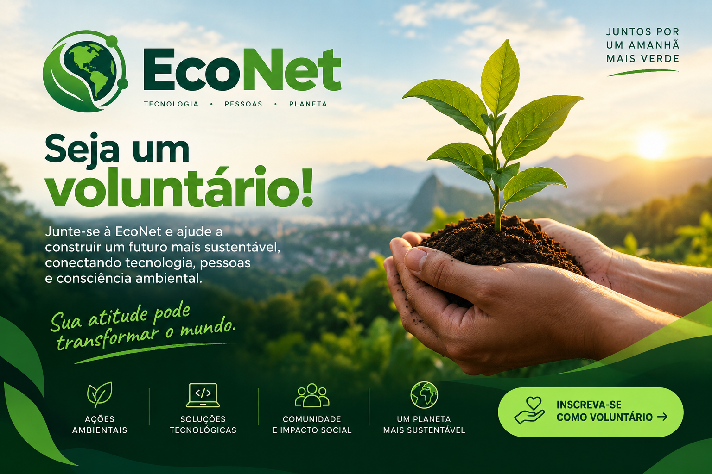

Sobre Nós
A Econet nasceu com o propósito de conectar pessoas, tecnologia e sustentabilidade em prol de um futuro mais consciente. Nosso objetivo é incentivar práticas sustentáveis e facilitar a participação das pessoas em ações que contribuam para a preservação do meio ambiente.
Por meio da tecnologia, buscamos aproximar a sociedade de iniciativas ambientais, promovendo a conscientização, o voluntariado e a colaboração.
Acreditamos que pequenas atitudes, quando realizadas em conjunto, podem gerar grandes impactos. Por isso, a Econet busca transformar informação em ação e contribuir para uma sociedade mais sustentável..
seja um voluntário
🌱 Faça parte da EcoNet! Junte-se como voluntário e ajude a construir um futuro mais sustentável, conectando tecnologia, pessoas e consciência ambiental. Sua atitude pode transformar o mundo.
Seja um voluntarioEntre em contato
Endereço: rua , 123 – Campinas/SP
Telefone: (19) 1234-5678
E-mail: contato@ong.org.br